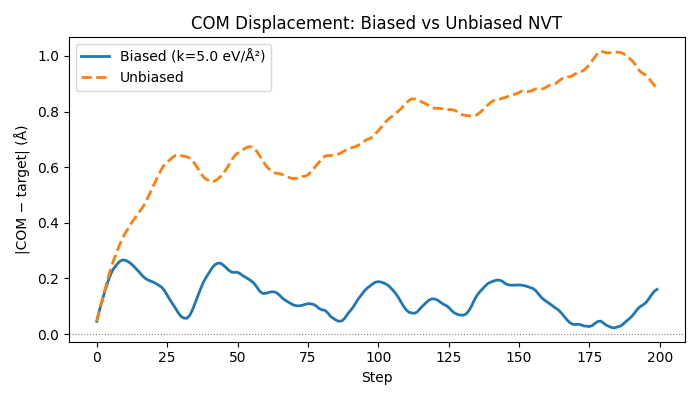

Note
Go to the end to download the full example code.
Biased Sampling with BiasedPotentialHook#
Standard MD explores configuration space according to the Boltzmann distribution, which concentrates sampling near free-energy minima. Many physically important processes — protein folding, nucleation, diffusion across a barrier — are rare events on MD timescales. Biased sampling adds an external potential that encourages the system to explore regions it would not visit spontaneously.
This example demonstrates the BiasedPotentialHook
by adding a harmonic center-of-mass (COM) restraint to a Lennard-Jones
argon cluster during NVT dynamics. The restraint keeps the cluster anchored
near a target position. In a production umbrella-sampling workflow you would
sweep the target position along a reaction coordinate and post-process the
windowed histograms with WHAM or MBAR.
Key concepts demonstrated#
Implementing a
bias_fn(batch) -> (energies, forces)closure.Registering
BiasedPotentialHookonNVTLangevin.Comparing COM drift in biased vs. unbiased runs.
Applications#
Free-energy profiles along a collective variable (umbrella sampling).
Steered MD — pulling a ligand out of a binding pocket.
Wall potentials — confining atoms to a region (e.g. a slab).
Metadynamics — accumulating a time-dependent Gaussian bias.
from __future__ import annotations
import logging
import os
import torch
from nvalchemi.data import AtomicData, Batch
from nvalchemi.dynamics import NVTLangevin
from nvalchemi.dynamics.base import HookStageEnum
from nvalchemi.dynamics.hooks import BiasedPotentialHook, NeighborListHook
from nvalchemi.models.lj import LennardJonesModelWrapper
logging.basicConfig(level=logging.INFO)
LJ argon model#
Standard argon parameters; max_neighbors=32 is sufficient for a
small (8-atom) non-periodic cluster.
LJ_EPSILON = 0.0104 # eV
LJ_SIGMA = 3.40 # Å
LJ_CUTOFF = 8.5 # Å
_R_MIN = 2 ** (1 / 6) * LJ_SIGMA # ≈ 3.82 Å — equilibrium pair distance
model = LennardJonesModelWrapper(
epsilon=LJ_EPSILON,
sigma=LJ_SIGMA,
cutoff=LJ_CUTOFF,
max_neighbors=32,
)
System builder — 2×2×2 argon cluster#
Eight argon atoms on a simple-cubic lattice, slightly perturbed so that the initial forces are non-zero and the thermostat has something to work with immediately.
def _make_argon_cluster(
n_per_side: int = 2,
spacing: float = _R_MIN * 1.05,
seed: int = 0,
) -> AtomicData:
"""Build an n³ argon cluster at equilibrium spacing + small noise."""
n = n_per_side**3
coords = torch.arange(n_per_side, dtype=torch.float32) * spacing
gx, gy, gz = torch.meshgrid(coords, coords, coords, indexing="ij")
positions = torch.stack([gx.flatten(), gy.flatten(), gz.flatten()], dim=-1)
torch.manual_seed(seed)
positions = positions + 0.05 * torch.randn_like(positions)
# Approximate initial velocities. nvalchemi stores velocities in
# sqrt(eV/amu); for rigorous initialisation use Maxwell-Boltzmann
# sampling: v_scale = sqrt(kT_eV / m_amu) (see the NVE/NVT examples).
velocities = 0.1 * torch.randn(n, 3)
return AtomicData(
positions=positions,
atomic_numbers=torch.full((n,), 18, dtype=torch.long), # Argon Z=18
forces=torch.zeros(n, 3),
energies=torch.zeros(1, 1),
velocities=velocities,
)
Defining a harmonic COM restraint#
The bias function receives a Batch and must return
(bias_energies, bias_forces) with shapes [B, 1] and [N, 3]
respectively.
For a single-system batch (B=1) the center-of-mass restraint is:
The force on atom i is:
For a batched system each graph is treated independently.
def harmonic_com_bias(
batch: Batch,
target_com: torch.Tensor,
k_spring: float,
) -> tuple[torch.Tensor, torch.Tensor]:
"""Harmonic COM restraint toward ``target_com``.
Parameters
----------
batch : Batch
Current simulation batch.
target_com : torch.Tensor
Target COM position, shape ``[3]`` (shared across all systems).
k_spring : float
Spring constant in eV/Ų.
Returns
-------
bias_energies : torch.Tensor
Shape ``[B, 1]``.
bias_forces : torch.Tensor
Shape ``[N, 3]``.
"""
B = batch.num_graphs
device = batch.positions.device
positions = batch.positions # [N, 3]
batch_idx = batch.batch # [N] — graph index for each atom
# Compute atoms per graph for normalisation.
atoms_per_graph = batch.num_nodes_per_graph.float() # [B]
# Compute COM per graph via scatter_add.
com = torch.zeros(B, 3, device=device, dtype=positions.dtype)
for dim in range(3):
com[:, dim].scatter_add_(0, batch_idx, positions[:, dim])
com = com / atoms_per_graph.unsqueeze(-1) # [B, 3]
tgt = target_com.to(device=device, dtype=positions.dtype) # [3]
delta = com - tgt.unsqueeze(0) # [B, 3]
# Potential energy per graph: 0.5 * k * ||delta||^2
bias_energies = 0.5 * k_spring * (delta**2).sum(dim=-1, keepdim=True) # [B, 1]
# Force on atom i = -k * delta[graph_of_i] / N_graph
# (uniform distribution of COM force to all atoms in the graph)
delta_per_atom = delta[batch_idx] # [N, 3]
n_per_atom = atoms_per_graph[batch_idx].unsqueeze(-1) # [N, 1]
bias_forces = -k_spring * delta_per_atom / n_per_atom # [N, 3]
return bias_energies, bias_forces
NVT simulation with COM restraint#
We anchor the cluster COM near the centroid of the initial configuration. A spring constant of 5.0 eV/Ų provides a noticeable but not overwhelming restoring force at the temperatures we are simulating (300 K ≈ 0.026 eV).
print("=== Biased NVT run ===")
data_biased = _make_argon_cluster(seed=42)
batch_biased = Batch.from_data_list([data_biased])
# Target COM = centroid of the initial cluster (origin of the restraint).
target_com = batch_biased.positions.mean(dim=0).detach().clone()
print(f"Target COM: {target_com.tolist()}")
k_spring = 5.0 # eV/Ų
# Build the bias function as a closure over target_com and k_spring.
def my_bias_fn(batch: Batch) -> tuple[torch.Tensor, torch.Tensor]:
return harmonic_com_bias(batch, target_com=target_com, k_spring=k_spring)
bias_hook = BiasedPotentialHook(bias_fn=my_bias_fn)
neighbor_hook = NeighborListHook(model.model_card.neighbor_config)
nvt_biased = NVTLangevin(
model=model,
dt=1.0, # fs (LJ time unit for Ar)
temperature=300.0,
friction=0.1,
n_steps=200,
random_seed=7,
)
nvt_biased.register_hook(neighbor_hook)
nvt_biased.register_hook(bias_hook)
# Track COM trajectory during the run.
com_biased: list[torch.Tensor] = []
class _COMRecorder:
"""AFTER_STEP hook that records per-system COM."""
stage = HookStageEnum.AFTER_STEP
frequency = 1
def __init__(self, storage: list) -> None:
self.storage = storage
def __call__(self, batch: Batch, dynamics) -> None:
# Accumulate on GPU; defer .cpu() to post-run analysis to avoid
# a GPU sync every frequency steps.
self.storage.append(batch.positions.mean(dim=0).detach())
nvt_biased.register_hook(_COMRecorder(com_biased))
batch_biased = nvt_biased.run(batch_biased)
print(f"Biased run complete: {nvt_biased.step_count} steps")
=== Biased NVT run ===
Target COM: [1.9942469596862793, 1.9935908317565918, 1.9866560697555542]
Biased run complete: 200 steps
Comparing biased vs unbiased#
Run the same cluster without the bias hook and compare how far the COM drifts.
print("\n=== Unbiased NVT run ===")
data_unbiased = _make_argon_cluster(seed=42)
batch_unbiased = Batch.from_data_list([data_unbiased])
com_unbiased: list[torch.Tensor] = []
nvt_unbiased = NVTLangevin(
model=model,
dt=1.0,
temperature=300.0,
friction=0.1,
n_steps=200,
random_seed=7,
)
nvt_unbiased.register_hook(NeighborListHook(model.model_card.neighbor_config))
nvt_unbiased.register_hook(_COMRecorder(com_unbiased))
batch_unbiased = nvt_unbiased.run(batch_unbiased)
print(f"Unbiased run complete: {nvt_unbiased.step_count} steps")
# Summarise final COM positions.
final_com_biased = batch_biased.positions.mean(dim=0)
final_com_unbiased = batch_unbiased.positions.mean(dim=0)
drift_biased = (final_com_biased - target_com).norm().item()
drift_unbiased = (final_com_unbiased - target_com).norm().item()
print("\nFinal COM displacement from target:")
print(f" Biased: {drift_biased:.4f} Å")
print(f" Unbiased: {drift_unbiased:.4f} Å")
print(
"COM displacement reduced by restraint."
if drift_biased < drift_unbiased
else "(Note: short run — drift reduction may not be visible at 200 steps.)"
)
=== Unbiased NVT run ===
Unbiased run complete: 200 steps
Final COM displacement from target:
Biased: 0.1609 Å
Unbiased: 0.8858 Å
COM displacement reduced by restraint.
Optional plot: COM trajectory#
Set the environment variable NVALCHEMI_PLOT=1 to display the figure.
Sphinx-gallery will capture it automatically.
if os.getenv("NVALCHEMI_PLOT", "0") == "1":
try:
import matplotlib.pyplot as plt
steps_b = list(range(len(com_biased)))
steps_u = list(range(len(com_unbiased)))
# Transfer accumulated GPU tensors to CPU once for the plot.
target_com_cpu = target_com.cpu()
biased_dist = [(c.cpu() - target_com_cpu).norm().item() for c in com_biased]
unbiased_dist = [(c.cpu() - target_com_cpu).norm().item() for c in com_unbiased]
fig, ax = plt.subplots(figsize=(7, 4))
ax.plot(steps_b, biased_dist, label="Biased (k=5.0 eV/Ų)", linewidth=2)
ax.plot(steps_u, unbiased_dist, label="Unbiased", linewidth=2, linestyle="--")
ax.axhline(0.0, color="gray", linewidth=0.8, linestyle=":")
ax.set_xlabel("Step")
ax.set_ylabel("|COM − target| (Å)")
ax.set_title("COM Displacement: Biased vs Unbiased NVT")
ax.legend()
fig.tight_layout()
plt.show()
except ImportError:
print("matplotlib not available — skipping plot.")

Total running time of the script: (0 minutes 3.392 seconds)